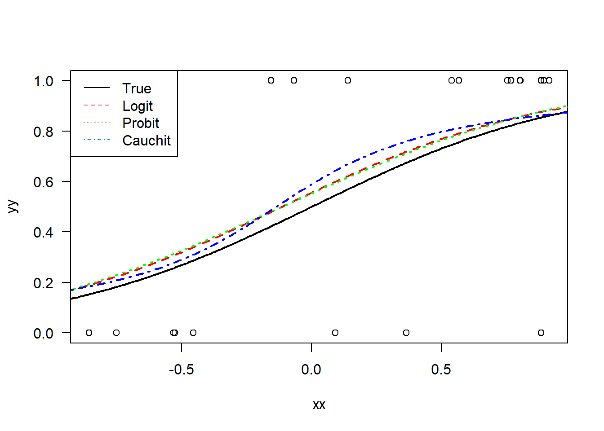

This final chapter is a brief survey of various methods that go beyond standard linear regression. In particular, we we look at generalized linear models, Neural Networks, and non-parametric regression.
4.1 Generalized Linear Models
A generalized linear model (GLM) extends the usual linear model to cases where the errors \(\varepsilon\) have proposed distributions that are very different than the normal distribution. In this case, we assume that \(\varepsilon\) comes from an exponential family, and the form of the model is \[
g\left( \mathrm{E}y \right) =
\beta_0 + \beta_1x_1 +\ldots+ \beta_px_p.
\] Here, \(g(\cdot)\) is referred to as the link function. As these are still parametric models, the parameters \(\beta_0,\ldots,\beta_p\) are often solved for via maximum likelihood. These models can be fit in R via the glm() function. While such models can be studied in full generality, for this course, we will only consider two specific GLMs: the logistic regression and the Poisson regression.
4.1.1 Logistic Regression
One of the most useful GLMs is the logistic regression. This is applied in the case of a binary response–i.e when \(y\in\{0,1\}\). This could, for example, be used for diagnosis of a disease where \(x_1,\ldots,x_p\) are predictors and \(y\) corresponds to the presence or absence of the disease.
The usual setup is to treat the observed responses \(y_i\in\{0,1\}\) as \(\mathrm{Bernoulli}\left(\pi_i\right)\) random variables, which is \[
\mathrm{P}\left(y_i=1\right)=\pi_i~\text{ and }~\mathrm{P}\left(y_i=0\right)=1-\pi_i.
\] This implies that the mean is \(\mathrm{E}{y_i}=\pi_i\) and the variance is \(\mathrm{Var}\left(y_i\right) = \pi_i(1-\pi_i)\). Hence, the variance is a function of the mean, which violates the assumption of constant variance in the Gauss-Markov theorem.
The goal is then to model \(\mathrm{E}{y_i}=\pi_i\) as a function of \({x}^\mathrm{T}_i\beta\). While different link functions are possible—see, for example, probit regression—the standard link function chosen is the logistic response function, sometimes referred to as the logit function, which is \[
\mathrm{E}y_i = \pi_i =
\frac{\exp({x}^\mathrm{T}_i\beta)}{1+\exp({x}^\mathrm{T}_i\beta)}
\] and results in an S-shaped curve. Rearranging the equation results in \[
\log\left( \frac{\pi_i}{1-\pi_i} \right)
= {x}^\mathrm{T}_i\beta = \beta_0 + \beta_1x_{i,1}+\ldots+\beta_px_{i,p}
\] where the ratio \(\pi_i/(1-\pi_i)\) is the odds ratio or simply the odds. Furthermore, the entire response \(\log\left( {\pi_i}/({1-\pi_i}) \right)\) is often referred to as the log odds.
The estimator \(\hat{\beta}\) can be computed numerically via maximum likelihood as we assume the underlying distribution of the data. Hence, we also get fitted values of the form \[
\hat{y}_i = \hat{\pi}_i =
\frac{\exp{({x}^\mathrm{T}_i\hat{\beta}})}{1+\exp{({x}^\mathrm{T}_i\hat{\beta}})}.
\] However, as noted already, the variance is not constant. Hence, for residuals of the form \(y_i-\hat{\pi}_i\) to be useful, we will need to normalize them. The Pearson residual for the logistic regression is \[
r_i = \frac{y_i - \hat{\pi}_i}{\sqrt{\hat{\pi}_i(1-\hat{\pi}_i)}}.
\]
4.1.1.1 Binomial responses
In some cases, multiple observations can be made for each value of predictors \(x\). For example, \(x_i\in\mathbb{R}^+\) could correspond to a dosage of medication and \(y_i\in\{0,1,\ldots,m_i\}\) could correspond to the number of the \(m_i\) subjects treated with dosage \(x_i\) that are cured of whatever ailment the medication was supposed to treat.
In this setting, we can treat the observed values \(\pi_i = y_i/m_i\). Often when fitting a logistic regression model to binomial data, the data points are weighted with respect to the number of observations \(m_i\) at each regressor \(x_i\). That is, if \(m_1\) is very large and \(m_2\) is small, then the estimation of \(\pi_1 = y_1/m_1\) is more accurate–i.e. lower variance–than \(\pi_2 =y_2/m_2\).
4.1.1.2 Testing model fit
Estimation of the parameters \(\beta\) is achieved by finding the maximum likelihood estimator. The log likelihood in the logistic regression with Bernoulli data is \[\begin{align*}
\log L(\beta)
&= \log \prod_{i=1}^n \pi_i^{y_i}(1-\pi_i)^{1-y_i}\\
&= \sum_{i=1}^n\left[
y_i\log\pi_i + (1-y_i)\log(1-\pi_i)
\right]\\
&= \sum_{i=1}^n\left[
y_i\log\left(\frac{\pi_i}{1-\pi_i}\right) + \log(1-\pi_i)
\right]\\
&= \sum_{i=1}^n\left[
y_i{x}^\mathrm{T}_i\beta - \log(1+\mathrm{e}^{{x}^\mathrm{T}_i\beta})
\right].
\end{align*}\] The MLE \(\hat{\beta}\) is solved for numerically.
Beyond finding the MLEs, the log likelihood is also used to test for the goodness-of-fit of the regression model. This comes from a result known as Wilks’ theorem.
4.1.2 Wilks’ Theorem
For two statistical models with parameter spaces \(\Theta_0\) and \(\Theta_1\) such that \(\Theta_0\subset\Theta_1\)—i.e. the models are nested—and likelihoods \(L_0(\theta)\) and \(L_1(\theta)\), then -2 times the log likelihood ratio has an asymptotic chi-squared distribution with degrees of freedom equal to the difference in the dimensionality of the parameter spaces. That is, \[
-2\log(LR) =
-2\log\left(
\frac{
\sup_{\theta\in\Theta_0}L_0(\theta)
}{
\sup_{\theta\in\Theta_1}L_1(\theta)
}
\right) \xrightarrow{\text{d}} \chi^2\left(\lvert\Theta_1\rvert-\lvert\Theta_0\rvert\right).
\]
In the case of logistic regression, we can use this result to construct an analogue to the F-test when the errors have a normal distribution. That is, we can compute the likelihood of the constant model \[
\log\left(\frac{\pi_i}{1-\pi_i}\right) = \beta_0
\tag{4.1}\] and the likelihood of the full model \[
\log\left(\frac{\pi_i}{1-\pi_i}\right) =
\beta_0 + \beta_1x_1 + \ldots + \beta_px_p.
\tag{4.2}\] and claim from Wilks’ theorem that \(-2\log(LR)\) is approximately distributed \(\chi^2\left(p\right)\) assuming the sample size is large enough.
In R, the glm() function does not return a p-value as the lm() function does for the F test. Instead, it provides two values, the null and residual deviances, which are respectively \[\begin{align*}
\text{null deviance}
&= -2 \log\left(
\frac{L(\text{null model})}{L(\text{saturated model})}
\right), \text{ and}\\
\text{residual deviance}
&= -2 \log\left(
\frac{L(\text{full model})}{L(\text{saturated model})}
\right).
\end{align*}\] Here, the null model is from Equation 4.1 and the full model is from Equation 4.2. The saturated model is the extreme model with \(p=n\) parameters, which perfectly models the data. It is, in some sense, the largest possible model used as a baseline.
In practice, the deviances can be thought of like the residual sum of squares from the ordinary linear regression setting. If the decrease is significant, then the regressors have predictive power over the response. Furthermore, \[
(\text{null deviance})-(\text{residual deviance}) =
-2 \log\left(
\frac{L(\text{null model})}{L(\text{full model})}
\right),
\] which has an asymptotic \(\chi^2\left(p\right)\) distribution. Such a goodness of fit test can be run in R using anova( model, test="LRT" ). Note that there are other goodness-of-fit tests possible for such models.
4.1.2.1 Logistic Regression: An Example
A sample of size \(n=21\) was randomly generated with \(x_i\in[-1,1]\) and \(y_i\) such that \[
y_i\sim\mathrm{Bernoulli}\left(
\frac{\mathrm{e}^{2x_i}}{1+\mathrm{e}^{2x_i}}
\right).
\] A logistic regression was fit to the data in R using the glm() function with the family=binomial(logit) argument to specify that the distribution is Bernoulli–i.e. binomial with \(n=1\)–and that we want a logistic link function.
The result from summary() is the model \[
\log\left( \frac{\pi}{1-\pi} \right) =
-0.4 + 2.16 x
\] with a p-value of \(0.03\) for \(\hat{\beta_1}=2.16\). A plot of the true and predicted curves is displayed below.
We could consider the alternative case were \[
y_i\sim\mathrm{Binomial}\left(m_i,
\frac{\mathrm{e}^{2x_i}}{1+\mathrm{e}^{2x_i}}
\right)
\] for some \(m_i\in\mathbb{Z}^+\), which is \(m_i\) Bernoulli observations at each \(x_i\). In this case, we have a much larger dataset, which results in the better fitting curve displayed below.
# Generate Some Dataset.seed(378)nn <-21xx <-runif(nn,-1,1)pp <-exp( 2*xx )/( 1+exp( 2*xx ) )yy <-rbinom( nn, 1, prob=pp )## plot dataplot( xx, yy, las=1)## Fit a logistic Regressionmd.logit <-glm( yy~xx, family =binomial(link="logit"))summary(md.logit)
Call:
glm(formula = yy ~ xx, family = binomial(link = "logit"))
Coefficients:
Estimate Std. Error z value Pr(>|z|)
(Intercept) 0.2244 0.5345 0.420 0.6746
xx 1.9589 0.8941 2.191 0.0285 *
---
Signif. codes: 0 '***' 0.001 '**' 0.01 '*' 0.05 '.' 0.1 ' ' 1
(Dispersion parameter for binomial family taken to be 1)
Null deviance: 27.910 on 20 degrees of freedom
Residual deviance: 21.779 on 19 degrees of freedom
AIC: 25.779
Number of Fisher Scoring iterations: 4
## Do a probit and a cauchit model as wellmd.pro <-glm( yy~xx, family =binomial(link="probit"))md.cau <-glm( yy~xx, family =binomial(link="cauchit"))plot( xx, yy, las=1)lines( tt, exp( 2*tt )/( 1+exp( 2*tt ) ),col ='black', lwd=2)lines( tt, prd.logit, lwd=2,col ='red', lty=2)prd.pro =predict( md.pro, data.frame(xx=tt),type ="response")prd.cau =predict( md.cau, data.frame(xx=tt),type ="response")lines( tt, prd.pro, lwd=2,col ='green', lty=3)lines( tt, prd.cau, lwd=2,col ='blue', lty=4)legend("topleft",legend =c("True","Logit","Probit","Cauchit"),col=1:4,lty=1:4)

4.1.3 Poisson Regression
The Poisson regression is another very useful GLM to know, which models counts or occurrences of rare events. Examples include modelling the number of defects in a manufacturing line or predicting lightning strikes across a large swath of land.
The Poisson distribution with parameter \(\lambda>0\) has PDF \(f(x) = \mathrm{e}^{-\lambda}\lambda^x/x!\). This can often be thought of as a limiting case of the the binomial distribution as \(n\rightarrow\infty\) and \(p\rightarrow0\) such that \(np\rightarrow\lambda\). If we want a linear model for a response variable \(y\) such that \(y_i\) has a \(\mathrm{Poisson}\left(\lambda_i\right)\) distribution, then, similarly to the logistic regression, we apply a link function. In this case, one of the most common link functions used is the log. The resulting model is \[
\log\mathrm{E}{y_i} = \beta_0 + \beta_1x_1 + \ldots + \beta_px_p
\] where \(\mathrm{E}{y_i} = \lambda_i\).
Similarly to the logistic regression case–and to GLMS in general–the parameters \(\beta\) are estimated via maximum likelihood based on the assumption that \(y\) has a Poisson distribution. Furthermore, the deviances can be computed and a likelihood ratio test can be run to assess the fit of the model. The log likelihood for a Poisson regression is \[\begin{align*}
\log L(\beta)
&= \log \prod_{i=1}^n \frac{\mathrm{e}^{-\lambda_i}\lambda_i^{y_i}}{y_i!} \\
&= \sum_{i=1}^n\left[
-\lambda_i + y_i\log\lambda_i - \log(y_i!)
\right]\\
&= \sum_{i=1}^n\left[
-\mathrm{e}^{{x}^\mathrm{T}_i\beta} + y_i{x}^\mathrm{T}_i\beta - \log(y_i!)
\right]
\end{align*}\]
4.1.3.1 Poisson Regression: An Example
As an example, consider a sample of size \(n=21\) generated randomly by \[
y_i \sim\mathrm{Poisson}\left( \mathrm{e}^{2x_i} \right).
\] A Poisson regression with log link can be fit to the data using R’s glm() function with the argument family=poisson(link=log).
The result from summary() is \[
\log(\lambda) = 0.16 + 1.95x
\] with a p-value of \(10^{-8}\) for \(\hat{\beta_1}=1.95\). A plot of the true and predicted curves is displayed below.
4.1.4 State of the Union Dataset
The following dataset comes from one I collected myself in 2016 by text mining the state of the union letters & addresses presented by the president of the Unites States since the founding of that country: The Frequency of America in America.
DIV time date sex ageGroup age
1 M3039 89.35000 1 male 3039 31.08459
2 M3039 90.18333 1 male 3039 37.77738
3 F5059 90.78333 1 female 5059 59.39656
4 M2029 90.90000 1 male 2029 22.49744
5 F3039 92.06667 1 female 3039 31.11756
6 M3039 93.23333 1 male 3039 36.22344
xx =sort( hypoDat$age )ord =order(hypoDat$age )
We can also use the R function smooth.spline() to fit a cubic smoothing spline to the data. The results are below where we vary the choice of smoothing parameter.
ss.a <-smooth.spline(x = xx, y = hypoDat$time[ord],spar=0.8)ss.b <-smooth.spline(x = xx, y = hypoDat$time[ord],spar=1.0)ss.c <-smooth.spline(x = xx, y = hypoDat$time[ord],spar=1.2)plot( hypoDat$age, hypoDat$time, las=1,ylab="time (minutes)",xlab="age (years)",main="Hypo Half Finishing Times by Age")lines( ss.a, lwd=3,lty=1,col=2 )lines( ss.b, lwd=3,lty=2,col=3 )lines( ss.c, lwd=3,lty=3,col=4 )legend("topleft",legend=c("par=0.8","par=1.0","par=1.2"),lwd=3,lty=1:3,col=2:4)